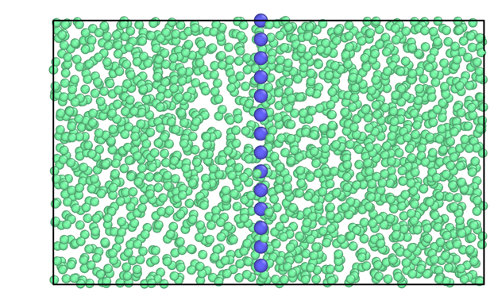
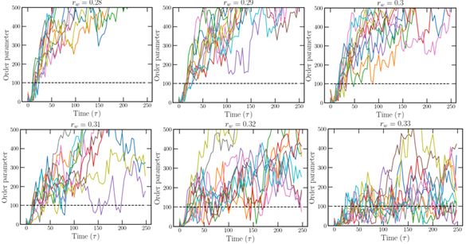
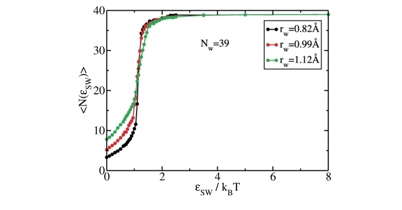

Mold integration for 100 plane of Lennard-Jones crystal¶
Note
In this section / is the package’s root folder.
Here we provide a detailed instructions to reproduce the crystal fluid interfacial free energy using the BG and square/well pair_style available in LAMMPS.
The data file (mold_100.lmp) and LAMMPS script (lj_moldint.in) is provided in the directory /examples/lj_mold/, but in this work example we will navigate through those files to explain them in detail.
The mold integration technique consists of different steps and here we only discuss the last two steps to obtain the interfacial energy of the 100 plane for the LJ particles at \(T^\ast=0.617\) and \(p^\ast=-0.02\). All the steps can be found in Espinosa et al.1, and they can be summarized as:
Preparation of the configuration by embedding the mold coordinates (from a crystal configuration) into the fluid at coexistence conditions.
Choice of the optimal well radius \(r_{0w}\) to extrapolate the interfacial energy.
Thermodynamic integration to calculate the interfacial energy for different well radii above the optimal radius \(\gamma(r_{0w}>r_w)\).
Extrapolation of the interfacial energy to the optimal radius \(r_{0w}\).
The configuration (step 1) can be created easily using the liquid and crystal configuration at the corresponding \((p,T)\) conditions. In this example, we provide the system data file for the plane 100 of a LJ particles at \(T^\ast=0.617\) and \(p^\ast=-0.02\):

Optimal radius calculation¶
The calculation of the optimal radius for extrapolation of the interfacial energy includes the following steps:
Create a directory sweeping different radii (\(r_w=0.27,\ 0.28,\ \ldots,0.33,0.34\sigma\)).
For each radius one needs to run different independent velocity seeds. Create 10 directories for each radius directory.
Copy the LAMMPS script file (
lj_mold.in) in each subdirectory along with the configuration file (mold_100.lmp).The LAMMPS script contains several variables that it is important to know to properly perform the simulations:
# ---------------------------- Define variables --------------------------------
variable nts equal 400000 # production number of time-steps
variable ts equal 0.001 # length of the ts (in lj units)
variable siglj equal 1.0 # sigma coefficient for BG pair-style
variable epslj equal 1.0 # epsilon coefficient for BG pair-style
variable cut1 equal 2.3 # internal cut-off for BG pair-style
variable cut2 equal 2.5 # external cut-off for BG pair-style
variable rw equal 0.33 # (reduced) width of the square well potential
variable alpha equal 0.005 # exponent of the square well potential
variable nkT equal 8.0 # well depth (reduced units)
variable seed equal 23782 # velocity seed
variable Tsyst equal 0.617 # (reduced) temperature of the system
variable Psyst equal -0.02 # (reduced) press of the system
variable NtsTdamp equal 100 # Number of ts to damp temperature
variable NtsPdamp equal 100 # Number of ts to damp pressure
variable thermoSteps equal 1000 # Number of ts to write properties on screen
variable restartSteps equal 30000 # Number of ts before write restart file
variable dumpSteps equal 5000 # Number of ts before write dump file
# --------------------- Derivate variables -------------------------------------
variable cutoff1 equal ${siglj}*${cut1}
variable cutoff2 equal ${siglj}*${cut2}
variable cutoff_well equal ${rw}*4.0
variable D equal ${nkT}*${Tsyst} # Depth of well
variable Tdamp equal ${NtsTdamp}*${ts}
variable Pdamp equal ${NtsPdamp}*${ts}
#### Define mold ####
read_data mold_100.lmp
group melt type 1
group mold type 2
For this step, the typical run must be approximately 200000 time-steps (with dt=1e-3), and that can be controlled by the parameter nts.
Regarding the interaction potential, the parameter rw stands for the well radius so this must be changed for the different studies radii during this step rw=\(0.27,\ 0.28,\ \ldots,0.33,0.34\sigma\).
The parameter nkT gives the well depth in \(k_{B}T\) units and for this step must be kept to 8 or bigger.
Regarding the velocity seed, the variable seed controls this aspect and thus, it must be changed with a random integer number for each simulation.
Also, there are some variables that might be interesting to know:
thermoStepsgives the number of timesteps to print the thermorestartStepsindicates the frequency of saving the restart filesdumpStepsis the number of steps to save the trajectory in the dump file and for this step it is recommended to be set to 2000.
Launch the simulation for each radius and seed. That means a total of 80 simulations, but they are quite short.
The analysis of this step consists in determining if there is induction time, i.e. if that radius can be thermodynamically integrated. To do so, the resulting trajectory must be analyzed using the order parameter \({\bar{q}}_6\) to determine the number of particles on the cluster. The recommended values for such analysis is a threshold of \({\bar{q}}_6=0.34\), and a cutoff of \(1.35\sigma\). As a result, one obtains different curves for the order parameter as a function of time for the different well radii:

A system can be considered to be integrated if the order parameter remains close to the total number of molds within the system (98 wells for this example). Therefore, in this case we can consider \(r_w=0.32\sigma\) as the greatest radius with not sufficiently long induction time so it is chosen as our optimal radius to extrapolate.
Thermodynamic integration¶
Once the optimal radius is estimated, the next step consists in thermodynamic integration of different radii above the optimal value of \(r_w\). The calculation of the interfacial energy for the different well radii includes the following steps:
Create a directory for each radius to be integrated (\(r_w=0.33,0.34,0.35\sigma\)) and in each directory, create a for each well depth considered for the calculation. This is a truncated range of values of \(\epsilon\) in \(k_{B}T\):
0.00001
0.1
0.2
...
1.9
2.0
2.3
2.6
3
3.5
4
4.5
5
6
7
8
Copy the LAMMPS script file (
lj_mold.in) in each subdirectory along with the configuration file (mold_100.lmp).The variables of the LAMMPS script presented in previous section need to be changed slightly. For this step, the typical run must be of the order of hundred of thousands time-steps (with
dt=1e-3), controlled by the parameternts. Regarding the interaction potential, the parameterrwthat controls the well radius must be changed for the different radiirw=0.33,0.34,0.35(in \(\sigma\)). The parameternkT(well depth) must change it for each simulation with the corresponding value. Also, thethermoStepsshould have a reasonable value (1000 is recommended), anddumpStepscan be set above 50000 timesteps as the trajectory is not needed for this stepLaunch the simulation for each radius and well depth.
The
thermo_styleis configured to show some magnitudes that are crucial for the thermodynamic integration. We need to get the average number of well occupancy for each value ofnkTso that we print the potential contribution due to LJ particle-well interaction (c_1, column 13), but also the number of particles in the system (v_nall, column 15) since the energy is expressed in reduced LJ units, i.e. energy per particle instead of energy of the total system:
# ------------- Output thermo information and averaged variables ---------------
variable well equal c_1*count(all)
variable nall equal count(all)
compute mytemp melt temp
compute 1 all pair square/well
thermo ${thermoSteps}
thermo_style custom step pe epair press ke c_mytemp lx ly lz pxx pyy pzz c_1 v_well v_nall spcpu density
Note
For real units the multiplication by the number of particles in the system is not necessary.
The calculation of the well occupancy for each depth can be estimated easily by taking the average over all the simulation of this value:
Note
Please note that the system requires a time to reach the steady state so that the analysis must be performed discarding after \(t\approx10\tau\). This equilibration time may vary depending on the system under study (water, hard-spheres, salt…)
In the following figure the curves of well occupancy vs. well depth for the different radii are presented.

Extrapolation and interfacial energy calculation¶
After the analysis in the previous step, one obtain a curve of well occupancy vs well depth for each radius so that the interfacial energy is calculated as
where \(N_w\) is the total number of wells and \(l\) is the short side of the box that can be obtained from the thermo (lx, ly, columns 7 and 8 int the thermo). The resulting integrals are provided in the following table:
\(r_w/\sigma\)) |
0.33 |
0.34 |
0.35 |
|---|---|---|---|
\(\gamma/\sigma^{-2}\epsilon\) |
0.363 |
0.357 |
0.348 |
To obtain the interfacial energy, you now shall extrapolate the value of the interfacial energy to the optimal radius (\(r_{0w}=0.32\sigma\)) using a linear fit. According to the interfacial energy provided in the table the interfacial energy is
This mold integration reported for the same system an interfacial energy of \(\gamma=0.372(8) \epsilon\sigma^(−2)\) extrapolating to an optimal radius of \(r_{0w}=0.315\sigma\) (please see the work by Espinosa et alEspinosa et al.1). Additionally, another work using the cleaving technique{footcite:t}(davidchack2003direct) reported a value of \gamma=0.371(3) \epsilon\sigma^(−2) for the same system.